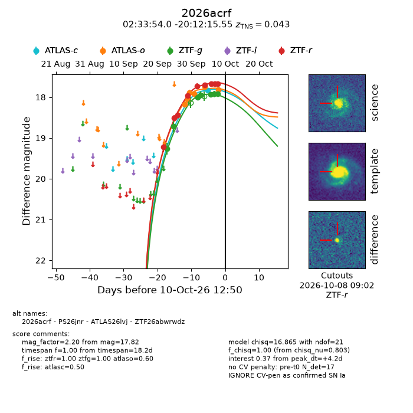
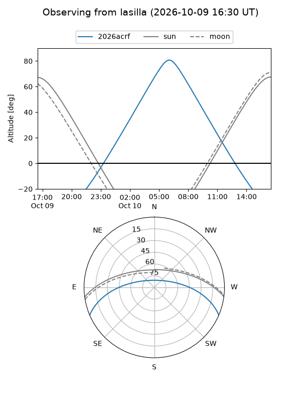
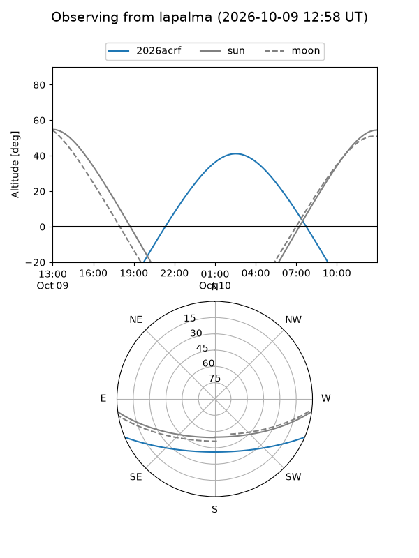
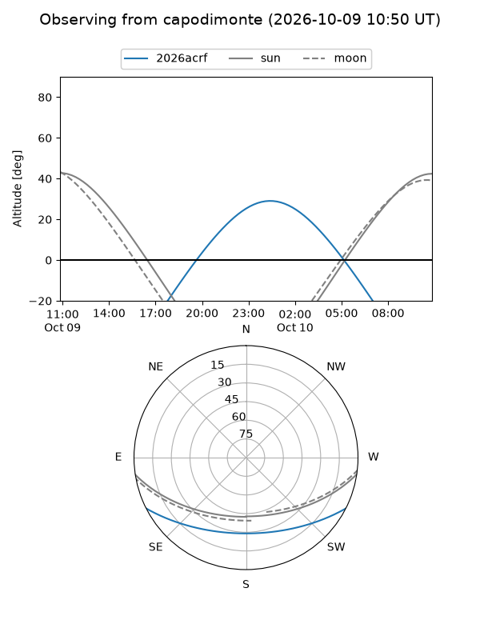
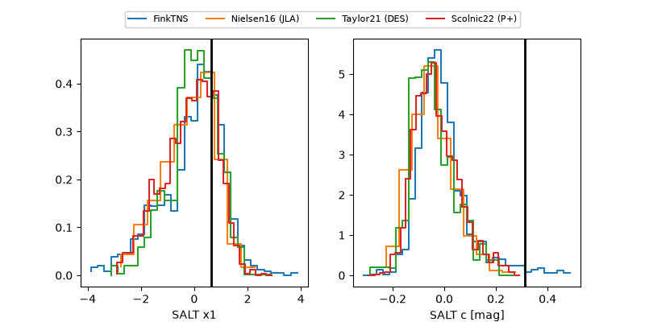

2026acrf
Target 2026acrf at 2026-10-10 12:51
Aliases and brokers:
FINK-ZTF: ztf.fink-portal.org/ZTF26abwrwdz
Lasair-ZTF: lasair-ztf.lsst.ac.uk/objects/ZTF26abwrwdz
ALeRCE-ZTF: alerce.online/object/ZTF26abwrwdz
YSE-PZ: ziggy.ucolick.org/yse/transient_detail/2026acrf
TNS name: wis-tns.org/object/2026acrf
Direct TNS query: direct search
alt names
ZTF26abwrwdz (ztf,fink_ztf)
2026acrf (tns,yse)
ATLAS26lvj (atlas)
PS26jnr (panstarrs)
Coordinates:
equatorial (ra, dec) = 38.4748,-20.20432
equatorial (HMS+DMS) = 02:33:53.95,-20:12:15.55
galactic (l, b) = (201.9824,-65.59098)
Flags:
TNS type: SN Ia
TNS redshift: 0.0430
peak dt: +4.2
Photometry:
last atlasc=17.83, atlaso=17.82, ztfg=17.91, ztfr=17.67
1 atlasc, 6 atlaso, 7 ztfg, 9 ztfr detections
Lightcurve

Visibility



Additional plots
